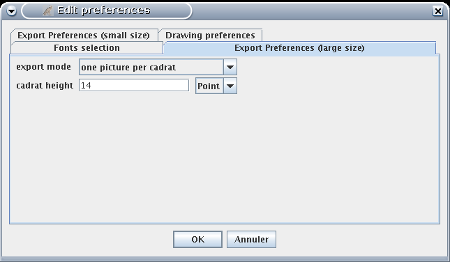

Copy and Paste in JSesh
As of version 2.1 and later, copy and paste can be used to
transfer data between Jsesh and other applications. You can :
- Launch JSesh twice and cut and paste between the two.
- Copy text and signs to a word processor (it works with both openoffice and Word)
Graphical copy and paste : configuration
Often, one needs two sizes of signs in an application: one for
main text, and a smaller one for footnotes. JSesh allows one to
keep two configurations for copy and paste. The current size can
be selected in the edit menu : simply choose "copy: small size" or
"copy: large size".
The corresponding settings can be changed in the preferences. There are two tabs, one for "small" and the other for "large" size.

"Cadrat height" changes the size of the pasted hieroglyphic text. "Export mode" allows you to chose how hieroglyphic text will be pasted. There are three options:
- as one large picture
- The whole selected text will be pasted in your word
processor as a single picture. This is fine for text in columns,
for instance, or if you want to keep the graphical layout. It
also seems that most word processor prefer to handle large
pictures than lots of small ones.
- grouped cadrats
- Adjacent hieroglyphic cadrats will be grouped in one
picture. The resulting text will alternate normal text and large
pictures.
- one picture per cadrat
- The pasted text will contain normal text and pictures for
the hieroglyphic text. But then, each cadrat will be rendered as
one picture. This is fine for line-cutting, and might be
interesting if you mix text and hieroglyphs.
Cut and paste limitations
Due to technical issues, we have put a limit on cut and paste. It's
not possible to paste very long texts in a word processor (you can
"export as RTF instead"). We will try to improve it, but we think
it's a minor nuisance, as one typically paste small parts of
hieroglyphic texts rather than whole large document (the limit is
currently 1000 cadrats).
Don't hesitate to write to the author about this (or other problems with JSesh).
ROSMORDUC Serge
Last modified: Fri Apr 21 12:50:19 CEST 2006